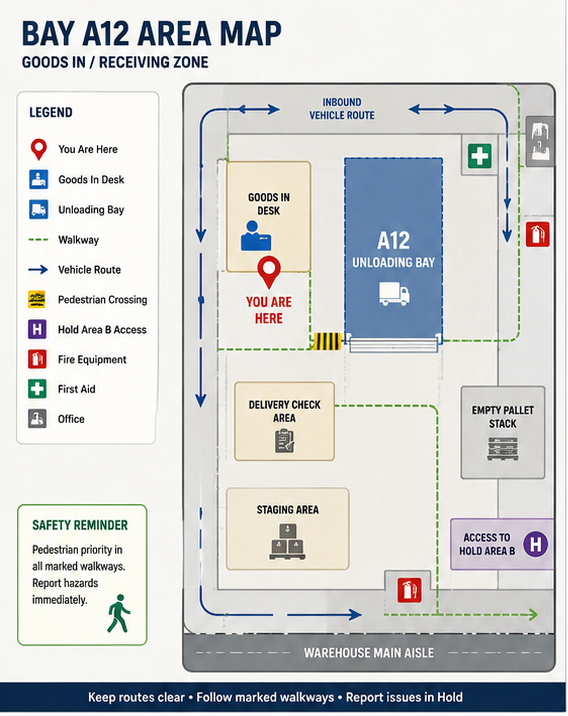

Current Instruction
Active- Bay A12 validation active.
- Goods-in intake area in use.
- Current status: verify before release.
Staff view of intake routing, Hold Area B handoff and shared forklift movement around Bay A12.

Staff view of intake routing, Hold Area B transfer and shared forklift movement.
Unverified, damaged or unclear loads should remain visible within Hold until an operational decision is confirmed.
Use these actions to preserve the bay record while work is happening.
Bay A12 validation status may affect dispatch continuity and stock visibility.